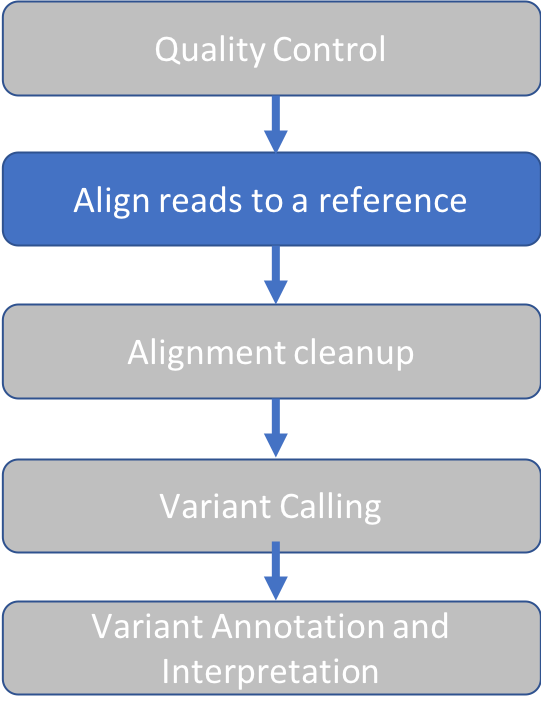
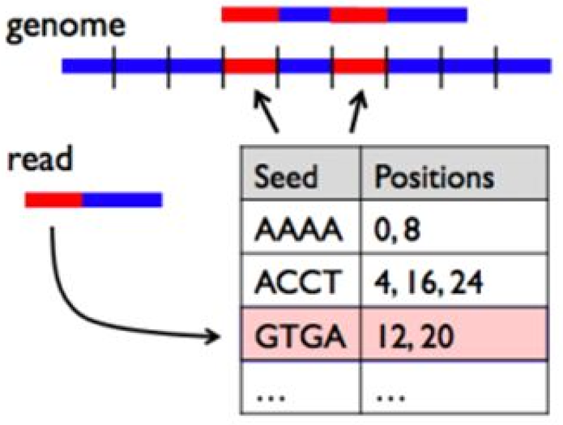
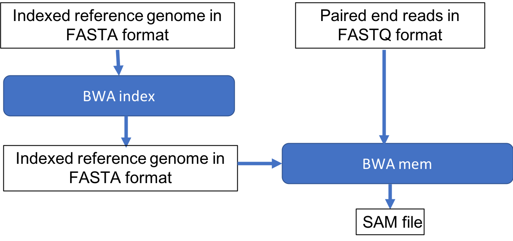

03 Alignment
Approximate time: 20 minutes
Goals
- Align short reads to a references genome with BWA
- View alignment using IGV

BWA Overview
Burrows-Wheeler Aligner (BWA) is a software package for mapping low-divergent sequences against a large reference genome, such as the human genome. The naive approach to read alignment is to compare a read to every position in the reference genome until a good match is found is far too slow. BWA solves this problem by creating an "index" of our reference sequence for faster lookup.
The following figure shows a short read with a red segment followed by a blue segment that we seek to align to a genome containing many blue and red segments. The table keeps track of all the locations where a given pattern of red and blue segments (seed sequence) occurs in the reference genome. When BWA encounters a new read, it looks up the seed sequence at the beginning of the read in the table and retrieves a set of positions that are potential alignment positions for that read. This speeds up the search by reducing the number of positions to check for a good match.

BWA has three algorithms:
- BWA-backtrack: designed for Illumina sequence reads up to 100bp (3-step)
- BWA-SW: designed for longer sequences ranging from 70bp to 1Mbp, long-read support and split alignment
- BWA-MEM: optimized for 70-100bp Illumina reads
We'll use BWA-MEM. Underlying the BWA index is the Burrows-Wheeler Transform This is beyond the scope of this course but is an widely used data compression algorithm.
BWA Index
In the following steps we'll create the BWA index.
-
Change to our reference data directory
cd intro-to-ngs/ref_data -
Preview our genome using the command
headby typing:
head chr10.fa
You'll see the first 10 lines of the file chr10.fa:
>chr10 AC:CM000672.2 gi:568336… <-- '>' charachter followed by sequence name
NNNNNNNNNNNNNNNNNNNNN <-- sequence
…
- Load the BWA module, which will give us access to the
bwaprogram:module load bwa/0.7.17
Test it out without any arguments in order to view the help message.
bwa
Result:
Program: bwa (alignment via Burrows-Wheeler transformation)
Version: 0.7.17-r1198-dirty
Contact: Heng Li <lh3@sanger.ac.uk>
Usage: bwa <command> [options]
Command: index index sequences in the FASTA format
…
Use the bwa index command to see usage instructions for genome indexing
bwa index
Result
Usage: bwa index [options] <in.fasta>
Options: -a STR BWT construction algorithm …
Run the command as instructed, using the default options:
bwa index chr10.fa
Result:
[bwa_index] Pack FASTA... 0.93 sec
[bwa_index] Construct BWT for the packed sequence...
[BWTIncCreate] textLength=267594844, availableWord=30828588
[BWTIncConstructFromPacked] 10 iterations done. 50853228 characters processed.
[BWTIncConstructFromPacked] 20 iterations done. 93947292 characters processed.
[BWTIncConstructFromPacked] 30 iterations done. 132245372 characters processed.
[BWTIncConstructFromPacked] 40 iterations done. 166280796 characters processed.
[BWTIncConstructFromPacked] 50 iterations done. 196527516 characters processed.
[BWTIncConstructFromPacked] 60 iterations done. 223406844 characters processed.
[BWTIncConstructFromPacked] 70 iterations done. 247293244 characters processed.
[BWTIncConstructFromPacked] 80 iterations done. 267594844 characters processed.
[bwt_gen] Finished constructing BWT in 80 iterations.
[bwa_index] 59.13 seconds elapse.
[bwa_index] Update BWT... 0.67 sec
[bwa_index] Pack forward-only FASTA... 0.59 sec
[bwa_index] Construct SA from BWT and Occ... 24.98 sec
[main] Version: 0.7.17-r1198-dirty
[main] CMD: bwa index chr10.fa
[main] Real time: 87.087 sec; CPU: 86.306 sec
When it's done, take a look at the files produced by typing ls.
The following is the result, with arrows and text on the right giving an explanation of each file.
chr10.fa <-- Original sequence
chr10.fa.amb <-- Location of ambiguous (non-ATGC) nucleotides
chr10.fa.ann <-- Sequence names, lengths
chr10.fa.bwt <-- BWT suffix array
chr10.fa.pac <-- Binary encoded sequence
chr10.fa.sa <-- Suffix array index
BWA alignment
Let's check the usage instructions for BWA mem by typing bwa mem
Usage: bwa mem [options] <idxbase> <in1.fq> [in2.fq]
Algorithm options:
-t INT number of threads [1]
-k INT minimum seed length [19]
-w INT band width for banded alignment [100]
-d INT off-diagonal X-dropoff [100]
-r FLOAT look for internal seeds inside a seed longer than {-k} * FLOAT [1.5]
-y INT seed occurrence for the 3rd round seeding [20]
-c INT skip seeds with more than INT occurrences [500]
-D FLOAT drop chains shorter than FLOAT fraction of the longest overlapping chain [0.50]
-W INT discard a chain if seeded bases shorter than INT [0]
-m INT perform at most INT rounds of mate rescues for each read [50]
-S skip mate rescue
-P skip pairing; mate rescue performed unless -S also in use
...
Since our alignment command will have multiple arguments, it will be convenient to write a script.
Go up one level to our main intro-to-ngs directory:
cd ..
Make a new directory for our results
mkdir results
Open a text editor with the program nano and create a new file called bwa.sh.
nano bwa.sh
Enter the following text.
Note that each line ends in a single backslash \, which will be read as a line continuation.
Be careful to put a space before the backslash and not after.
This serves to make the script more readable.
module load bwa/0.7.17
bwa mem \
-t 2 \
-M \
-R "@RG\tID:reads\tSM:na12878\tPL:illumina" \
-o results/na12878.sam \
ref_data/chr10.fa \
raw_data/na12878_1.fq \
raw_data/na12878_2.fq
Let's look line by line at the options we've given to BWA:
1. -t 2 : BWA runs two parallel threads. Alignment is a task that is easy to parallelize
because alignment of a read is independent of other reads. Recall that in Setup we asked for a compute
node allocation with --cpus=4, which can process up to 8 threads. Here we are using only 2 threads.
-
-M: "mark shorter split hits as secondary". This option will change the SAM flag (discussed in next section) that is assigned to short reads that have read segments mapped to distant locations. It optionn is needed for GATK/Picard compatibility, which are tools we use downstream. see this explanation on biostars -
-R "@RG\tID:reads\tSM:na12878\tPL:illumina": Add a read group tag (RG), sample name (SM), and platform (PL) to our alignment file header. We'll see where this appears in our output. In addition to being required for GATK, it's advisable to always add these labels to make the origin of the reads clear. -
-o results/na12878.sam: Place the output in the results folder and give it a name -
The following arguments are our reference, read1 and read2 files, in the order required by BWA:
ref_data/chr10.fa \ raw_data/na12878_1.fq \ raw_data/na12878_2.fq
Exit nano by typing ^X and follow prompts to save and name the file bwa.sh.
Now we can run our script.
sh bwa.sh
Result:
[M::bwa_idx_load_from_disk] read 0 ALT contigs
[M::process] read 9304 sequences (707104 bp)...
[M::mem_pestat] # candidate unique pairs for (FF, FR, RF, RR): (0, 2256, 0, 0)
[M::mem_pestat] skip orientation FF as there are not enough pairs
[M::mem_pestat] analyzing insert size distribution for orientation FR...
[M::mem_pestat] (25, 50, 75) percentile: (120, 160, 216)
[M::mem_pestat] low and high boundaries for computing mean and std.dev: (1, 408)
[M::mem_pestat] mean and std.dev: (172.35, 67.15)
[M::mem_pestat] low and high boundaries for proper pairs: (1, 504)
[M::mem_pestat] skip orientation RF as there are not enough pairs
[M::mem_pestat] skip orientation RR as there are not enough pairs
[M::mem_process_seqs] Processed 9304 reads in 1.034 CPU sec, 0.518 real sec
List the files in the results directory by typing ls results.
Result:
na12878.sam
Sequence Alignment Map (SAM)
Take a look at the output file:
cd results
head na12878.sam
Header:
@SQ SN:chr10 LN:133797422 <-- Reference sequence name (SN) and length (LN)
@RG ID:reads SM:na12878 <-- Read group (ID) and sample (SM) information that we provided
@PG ID:bwa PN:bwa VN:0.7.17… CL:bwa mem <-- Programs and arguments used in processing
Alignment:
| 1 | 2 | 3 | 4 | 5 | 6 | 7 | 8 | 9 | 10 | 11 |
|---|---|---|---|---|---|---|---|---|---|---|
| SRR098401.109756285 | 83 | chr10 | 94760653 | 60 | 76M | = | 94760647 | -82 | CTAA… | D?@A... |
| SRR098401.109756285 | 163 | chr10 | 94760647 | 60 | 76M | = 94760653 | 82 | ATTA… | ?>@@... |
The fields: 1. Read ID 2. Flag: indicates alignment information e.g. paired, aligned, etc. Here is a useful site to decode flags. 3. Reference sequence name 4. Position on the reference sequence where mapping starts 5. Mapping Quality 6. CIGAR string: summary of alignment, e.g. match (M), insertion (I), deletion (D) 7. RNEXT: Name of reference sequence where the other read in the pair aligns 8. PNEXT: Position in the reference sequence where the other read in the pair aligns 9. TLEN: Template length, size of the original DNA or RNA fragment 10. Read Sequence 11. Read Quality
More information on SAM format.
Alignment Quality Control
Next, we'd like to know how well our reads aligned to the reference genome?
We'll use a tool called Samtools to summarize the SAM Flags.
To load the module:
module load samtools/1.9
To run the flagstat program on our SAM file:
samtools flagstat na12878.sam
Result:
9306 + 0 in total (QC-passed reads + QC-failed reads) <-- We have only QC pass reads
2 + 0 secondary <-- 2 reads have >1 alignment position
0 + 0 supplementary <-- for reads that align to multiple chromosomes
0 + 0 duplicates
9271 + 0 mapped (99.62% : N/A) <-- For exome data, >90% alignment is expected
9304 + 0 paired in sequencing
4652 + 0 read1
4652 + 0 read2
9226 + 0 properly paired (99.16% : N/A)
9240 + 0 with itself and mate mapped
29 + 0 singletons (0.31% : N/A)
0 + 0 with mate mapped to a different chr
0 + 0 with mate mapped to a different chr (mapQ>=5)
Samtools flagstat is a great way to check to make sure that the aligment meets the quality expected. In this case, >99% properly paired and mapped indicates a high quality alignment.
Summary
